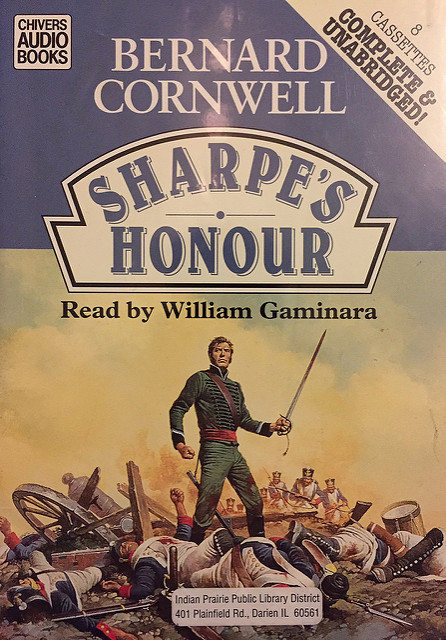

Sharpe's Honour 제1장 (번역)
게시: 2017-06-01T22:35:51+09:00
Sharpe 시리즈 중, Sharpe's Honour 중 제 1장입니다. 맛보기로 한 장만 번역했어요. 참 재미있는 소설인데... 요즘 도서 시장이 너무 쪼그라들어서 뭐라 할 말이 없네요. 국내 출판이 정식으로 진행되기를 바랍니다.

차가운 바람이 바위투성이 골짜기를 휩쓸던 습기찬 어느 봄날, 샤프 소령은 오래된 돌 다리 위에 서서 남쪽의 바위투성이 능선 낮은 쪽으로 향하는 길을 지켜보고 있었다. 추적추적 내리는 비로 인해 언덕들은 어두워보였다.
그의 뒤쪽으로는, 머스켓 소총의 발화장치를 헝겊으로 가리고, 총구에는 빗물이 흘러들어가지 않도록 코크마개를 막아둔 채로, 5개 중대의 보병들이 늘어서 있었다.
샤프가 알기로는, 능선까지의 거리는 500야드였다. (머스켓 소총의 유효사정거리는 약 60야드입니다.:역주) 곧 그 능선 위로 적군이 나타날 예정이었고, 그들이 다리를 건너는 것을 막는 것이 그의 임무였다. 아주 간단한, 군인의 일거리였다. 이 1813년의 봄은 늦게 찾아왔고, 이 국경의 구릉지대에는 비만 줄곧 내렸으므로, 다리 아래의 강물은 깊고 빨라서, 걸어서 건널 수 없는 상태였으므로, 그 임무는 훨씬 더 쉬워진 상태였다. 적군은 샤프가 기다리고 있는 다리를 통과하던가, 아니면 강물을 아예 건널 수 없었다.
"소령님 ?" 경보병 중대의 지휘관인 달렘보드 대위는 샤프 소령의 우중충한 기분을 건드리지 않으려고 조심스러운 목소리를 냈다.
"무슨 일인가, 대위 ?"
"참모 장교가 오고 있습니다."
샤프는 나직히 궁시렁거렸지만, 아무말도 하지 않았다. 그는 등 뒤에서 말발굽 소리가 다가와 속도를 줄이는 것을 들었다. 다음 순간 말이 그의 앞에 나타나 섰고, 흥분한 기병 중위 하나가 그를 내려다보고 있었다. "샤프 소령님 ?"
단호하고 화가 난 듯한 검은 눈동자가 중위의 금도금이 된 박차와 장화를 거쳐, 진흙이 군데군데 묻었지만 비싸보이는 파란색 울 망토를 지나, 흥분한 참모 장교의 눈과 마주쳤다. "자네가 내 시야를 가리고 있는데, 중위."
"죄송합니다, 소령님."
중위는 서둘러 말을 한쪽으로 움직였다. 그는 험난한 산길을 돌아, 아주 열심히 말을 달려왔고, 그의 승마 솜씨에 스스로 우쭐해있었다. 그의 암말은 안절부절 못하고 움직이면서, 그 중위의 흥분감을 그대로 반영하고 있었다. "프레스톤 장군께서 보내신 전갈입니다, 소령님. 적군이 이쪽으로 오고 있습니다."
"나도 능선에 초병을 세워놓았었네." 샤프는 무례한 말투로 말했다. "적병을 30분 전부터 보고 있었어."
"예, 소령님."
샤프는 능선을 쳐다보았다. 중위는 자기가 그저 조용히 사라져야 하는지 망설이고 있었는데, 갑자기 이 라이플맨(샤프)이 중위를 다시 쳐다보았다. "자네 프랑스말 할 줄 아나 ?"
리처드 샤프 소령을 처음 만난다는 사실에 신경이 곤두서 있던 중위는 고개를 끄덕였다. "예, 소령님."
"얼마나 잘하지 ?"
기병 중위는 미소를 지었다. "Tres bien, Monsieur, Je parle.. (Very well, Mister, I speak...:역주) "
"내가 언제 빌어먹을 시범을 들려달라고 했나 ? 질문에 대답이나 하게 !"
중위는 이 무자비한 힐책에 겁이 났다. "아주 잘 합니다, 소령님."
샤프는 그를 쳐다보았다. 중위는 그 눈길이 마치 포동포동 살이 찌고 한때 잘나갔던 사형수를 대하는 집행인의 눈길 같다고 생각했다. "이름이 뭔가, 중위 ?"
"트럼퍼-존스입니다, 소령님."
"흰 손수건 있나 ?"
이 대화는 점점 이상한 방향으로 흘러가는군 하고 중위는 생각했다. "예, 소령님."
"좋아." 샤프는 다시 다리 쪽과, 능선을 넘어 길이 뻗어오는 움푹한 안장모양의 고개길 쪽을 쳐다보았다.
일이 아주 꼬일대로 꼬여 버리고 말았어 라고 샤프는 생각하고 있었다. 영국군은 포르투갈 국경의 동쪽으로부터 진격로를 확보해나가고 있었다. 프랑스군의 거점을 몰아내고 프랑스 수비군을 쫓아내면서 다가오는 여름의 작전 준비를 해나가고 있었다.
그리고 이렇게 치적치적 비가 내리면서 차가운 바람이 부는 날에, 5개대대의 영국군이 토르메스 강가의 프랑스 수비대를 공격했다. 프랑스군 후방 5마일 떨어진 곳에, 프랑스군이 퇴각해올 이 길 도중에, 이 다리가 있었다. 샤프는 대대의 절반 정도되는 병력(5개 중대)과 라이플 중대 하나를 거느리고, 그 퇴각을 막기 위해, 밤을 새워 길을 빙 돌아 행군하여 여기에 오게 된 것이었다. 그의 임무는 간단했다. 추격해온 다른 대대가 퇴각하는 프랑스군을 따라잡아 끝장을 볼 수 있도록, 프랑스군의 퇴각을 막고 있으면 되는 것이었다. 이렇게 간단한 일이었지만, 그날 오후가 되면서, 샤프의 기분은 매우 저기압이었다.
"소령님 ?" 샤프는 위를 쳐다보았다. 중위는 접은 린넨 손수건을 내밀고 있었다. 트럼퍼-존스는 불안한 듯이 미소를 지어보였다. "손수건이 필요하시다고요, 소령님 ?"
"내가 코를 풀자는 건 줄 아나, 이 바보야 ! 항복을 위한 거야 !" 샤프는 으르렁거리고는 두 발자국을 옮겨갔다.
마이클 트럼퍼-존스는 그를 멍하니 쳐다보았다. 비록 1500명의 프랑스군이 겨우 400명도 안되는 이 작은 부대 쪽으로 몰려오고 있는 것은 사실이었지만, 트럼퍼-존스가 리처드 샤프라는 남자에 대해 들은 바로는, 샤프가 이렇게 급작스럽게 항복을 하겠다는 것은 정말 말도 안되는 것이었다. 실제로, 샤프의 명성은 잉글랜드에까지 퍼져 있었고, 극히 최근에야 영국에서 떠나온 트럼퍼-존스가 최전선으로 다가올 수록 그는 그 이름을 점점 더 많이 듣게 되었다. 샤프는 군인 중의 군인으로서, 그의 칭찬을 듣는 것은 진정한 명예로 간주되었고, 그의 이름은 프로페셔널로서의 뛰어남에 대한 표석으로 사용되었다. 그런데 그 남자가 지금 싸우지도 않고 항복할 생각을 하고 있는 것이었다.
마이클 트럼퍼-존스 중위는 그 생각에 어이가 없어, 햇빛과 바람에 검게 그을린 샤프의 얼굴을 몰래 쳐다보았다. 잘 생긴 얼굴이었으나, 샤프의 왼쪽 눈 아래의 긴 흉터(1803년, 인도에서 도드 대령의 칼에 입은 상처입니다.:역주)로 인해, 마치 사람을 비웃는 듯한 인상을 주었다. 트럼퍼-존스는 모르고 있었지만, 샤프가 웃을 때면 그 흉터로 인한 비웃는 듯한 표정은 사라지곤 했다. 트럼퍼-존스가 가장 놀란 부분은, 샤프는 계급장을 전혀 달고 있지 않다는 것이었다. 장교의 허리띠나 견장도 없어서, 그가 장교라는 것을 나타내는 것은 옆에 차고 있는 낡아빠진 기병용 군도 뿐이었다. 트럼퍼-존스 생각에, 그는 정말 영국군이 빼앗은 첫번째 프랑스의 독수리 군기를 탈취한, 그리고 바다호스 요새의 무너진 틈새로 처음 돌격해 들어간, 그리고 가르시아 에르난데스에서 독일 병사들과 함께 그 유명한 기병 돌격을 감행했던, 바로 그 군인의 이미지를 그대로 가지고 있었다. 그가 가지고 있는 자신만만함은, 그가 군 생활을 졸병 계급부터 시작했다는 것을 믿기 어렵게 만들었다. 그리고 지금 그가 총 한방 쏴보기도 전에 숫적으로 불리하다고 항복하려 한다는 것은 더더욱 믿기 힘들었다.
"지금 뭘 보는 거야, 중위 ?"
"아무것도 아닙니다, 소령님." 트럼퍼-존스는 샤프가 남쪽 구릉지대를 쳐다보고 있다고 생각했었다. 실제로 샤프는 그쪽을 쳐다보고 있었다. 하지만 그는 중위가 자기를 쳐다보고 있다는 것을 느꼈고, 그는 그것이 싫었다. 그는 주목을 받는 것이 싫었고, 누군가 자신을 쳐다보는 것이 싫었다. 요즘 그는 친구들 사이에서만 편안함을 느꼈다. 그는 이 젊은 기병 중위에게 필요 이상으로 심하게 대했다는 생각이 들었다. 그는 중위를 올려다 보았다. "적에게 3문의 대포가 있는 것 같던데, 맞나 ?"
"예, 소령님."
"4파운드 포였지 ?"
"그런 것 같습니다, 소령님."
샤프는 툴툴거렸다. 그는 능선을 지켜보았다. 그는 그 두마디 질문이 중위에게 좀 친근한 느낌을 주기를 바랬지만, 사실 그는 요즘 낯선 사람들에게서는 친근함을 전혀 느끼지 못했다. 그는 지난 크리스마스 때부터 우울해 있었다. (Sharpe's Enemy 편에서 샤프는 크리스마스날 스페인인 아내인 테레사를 잃습니다. : 역주) 그는 격렬한 죄책감과 무자비한 절망감 사이에서 흔들리고 있었는데, 그 이유는 그의 아내가 '신의 대문'이라 불리는 산길의 눈속에서 살해되었기 때문이었다. 그녀의 목에서 흘러내리던 피의 이미지가 그의 마음 속에 떠올랐다. 그는 그 장면을 몰아내기라도 하듯 머리를 흔들었다. 그는 그녀가 죽었기 때문에, 그녀 몰래 바람을 피웠었고, 그녀의 사랑에 대한 보답이 그런 종말을 맞았기 때문에, 죄책감을 느꼈다. 그리고 그의 어린 딸이 이제 엄마없는 아이가 되었다는 것 때문에 죄책감을 느꼈다.
그는 그의 죄책감 때문에 무일푼 상태였다. 아직 두살이 채 안된 그의 딸은 그녀의 스페인 삼촌과 숙모 밑에서 자라고 있었는데, 그가 스페인 정부로부터 훔쳤던 (Sharpe's Gold 편에서 그는 스페인 금화를 빼앗아 오는 임무를 맡았는데, 당연히 그중 일부를 슬쩍합니다.:역주) 그의 저축금 전체를 그의 딸 안토니아에게 보냈었다. 지금 그에게 남은 것은 그의 군도와 라이플 소총, 그의 망원경, 그리고 몸에 걸친 낡은 군복 한벌이 전부였다. 그는 값비싼 말을 탄, 금도금이 된 장식 칼집을 차고 새 가죽장화를 신은 이 젊은 중위를 속으로 저주하고 있었다.
그의 등 뒤의 대오에서 웅성거림이 일어났다. 병사들이 남쪽 능선에 갑자기 나타난 사람의 모습을 본 것이었다. 샤프는 뒤돌아섰다.
"대대~!" 곧 침묵이 뒤따랐다. "대대~! 차렷 ! (Talion ! 'Shun !)" (Battalion, Attention ! 을 이렇게 발음하는군요.: 역주)
병사들의 장화가 비에 젖은 바위 위에 철썩 소리를 내며 부딪혔다. 그들은 프랑스군의 퇴각로가 될 북쪽길이 놓인 작은 계곡의 입구를 가로막은 채 2줄로 늘어서 있었다.
샤프는 그들의 불안함을 이해했다. 그들은 샤프의 대대에 속한 샤프의 병사들이었다. 또한 그는 이 병사들을 신뢰하고 있었다. 비록 적군의 숫자가 압도적으로 많은 상태라고 해도, 그 신뢰에는 변함이 없었다. "헉필드 중사 !"
"소령님 !"
"군기를 올려라 !"
마이클 트럼퍼-존스가 보니, 이런 엄숙한 순간에 어울리지 않게도 병사들은 씨익 웃고 있었는데, 다음 순간 그 이유를 알 수 있었다. 그 군기라는 것은 대대의 정상적인 깃발이 아니라, 껍질을 벗긴 자작나무 줄기에 헝겊조각을 매달아 놓은 것에 불과했다. 깃발은 비에 젖어 축축하게 늘어져 있었으므로, 먼거리에서는 그것이 병사들 자켓에서 뜯어낸 노란색 헝겊으로 장식한 망토에 불과하다는 것을 알아볼 수 없었다. 막대기의 끝에는 노란 헝겊을 묶어놓아, 멀리서 보았을 때는 잉글랜드의 왕관처럼 보이게 꾸며 놓았다.
샤프는 이 참모장교가 놀라고 있는 것을 보았다. "반편(half) 대대는 군기를 소지할 수 없다네, 미스터 트럼퍼-존스."
"예, 그렇지요, 소령님."
"그리고 프랑스군도 그걸 알지."
"그렇습니다, 소령님."
"그러니 그들이 뭐라고 생각하겠는가 ?"
"여기에 정규 1개 대대가 있다고 생각하겠지요 ?"
"그렇지." 샤프가 다시 남쪽을 쳐다보는 동안, 트럼퍼-존스는 왜 항복에 앞서 이런 속임수가 필요한지 어리둥절하고 있었다. 트럼퍼-존스는 샤프에게 묻지 않는 것이 낫겠다고 생각했다. 샤프 소령의 얼굴을 보면 쓸데없는 질문을 할 용기가 나지 않았다.
그것도 무리가 아니었다. 바로 그때, 리처드 샤프 소령은 남쪽 능선을 쳐다보면서, 여기는 정말 죽을 장소치고는 비참하고, 어울리지도 않고, 또 바보같은 장소라고 생각하고 있었기 때문이었다. 가끔씩 그는 죽고 나면 다시 테레사를 만나서, 항상 그를 반겨주던 그녀의 갸름하고 해맑은 얼굴을 다시 볼 수 있을지 궁금해했다. 그녀의 얼굴의 자세한 모습은 그의 기억에서 점점 흐릿해져 가고 있었다. 그는 그녀의 초상화도 가지고 있지 않았다. 그리고 스페인 친척의 집안에서 자라고 있는 그의 딸은 엄마의 초상화도, 아빠의 초상화도 가지고 있지 않았다.
영국군은 언젠가는 스페인 땅을 벗어나 진격해나갈 것이고, 그는 군대와 함께 움직여야 했다. 그러면 그의 딸은 샤프가 어릴 때 고아로 남겨졌듯이, 부모없이 살아가도록 남겨질 것이었다. 불행이 불행을 낳는군 하고 그는 생각했다. 한편으로는 안토니아의 삼촌과 숙모는, 샤프 자신보다는 훨씬 좋은 부모가 되어줄 것이라는 위안감을 느꼈다.
계곡 위로 거센 바람이 비를 몰고와서, 시야를 흐리게 하면서 다리의 돌에 부딪히 휘잉 소리를 냈다. 샤프는 말을 탄 참모 장교를 올려다 보았다. "뭐가 보이나, 중위 ?"
"말탄 사람 6명입니다, 소령님."
"적군에게 기병대는 없지 ?"
"우리가 본 바로는 없었습니다, 소령님."
"그럼 저건 적군의 보병 장교들이겠군. 저자식들은 지금 우리를 어떻게 요리할까 작전을 짜고 있을거야." 그는 씁쓸하게 웃었다. 그는 날씨가 개여서, 햇빛이 따뜻하게 비추어 지난 겨울의 아픈 기억들을 날려버릴 수 있기를 바랬다.
그때 길이 걸쳐있는 능선 위가, 갑자기 프랑스군의 파란색 군복으로 가득 메워졌다. 샤프는 적군이 그를 향해 다가오는 동안, 몇개 중대나 되는지 세어보았다. 6개 중대였다. 그들은 전위대였고, 다리를 향해 돌격하여 점령하되, 대포가 도착하기 전까지는 기다리라고 명령을 받았을 것이었다.
그날 아침, 샤프는 피터 달렘보드 대위의 말을 빌려서 프랑스군의 퇴각로를 10번도 넘게 돌아보았었다. 그는 프랑스군 지휘관의 입장에서 생각해보았고 적군이 어떻게 나올지 확신이 들때까지 혼자서 자기 자신과 토론을 해보았었다. 이제 적군은 그대로 행동하고 있었고, 그는 그걸 지켜보고 있었다.
프랑스군은 영국군 대부대가 뒤를 쫓아오고 있다는 것을 알고 있었다. 그들은 감히 길에서 벗어나 구릉지대로 피할 생각을 할 수 없었다. 그러자면 대포를 버리고 가야했고, 그럴 경우 스페인 빨치산의 밥이 될 것이 뻔했기 때문이었다. 그들은 틀림없이 앞을 가로막고 있는 훼방꾼들을 재빨리 날려버리려 할 것이고, 그러기 위한 도구는 그들의 대포일 것이었다.
능선 아래 150야드 지점에, 길이 계곡 바닥으로 내려오면서 마지막으로 굽이치는 지점에, 대포가 자리잡기에 딱 좋은 바위로 된 넓은 평지가 있었다. 거기서부터 프랑스군 포병은 샤프가 거느린 2열 횡대의 보병들에게 캐니스터(커다란 산탄총같은 포탄의 일종: 역주)를 퍼부어 피떡을 만들어버릴 수 있었다. 영국군 대오가 산산조각이 나면, 프랑스 보병들이 총검을 들고 다리를 향해 돌격을 해올 것이었다. 그 바위 평지에서라면 프랑스 포병은 자신들의 보병 머리 너머로 대포를 쏘아댈 수 있었다. 사실 그 바위 평지는 바로 그러기 위해 만들어진 것으로, 샤프는 그날 아침 작업조를 보내 바위 바닥에서 포병들에게 걸리적거릴 만한 것들을 다 치워놓았었다.
그는 프랑스 포병이 바로 그 위치에 있기를 바랬다. 그는 프랑스군이 대포를 거기에 갖다놓으라고 초대장을 보낸 셈이었다.
그는 3대의 대포가 언덕길을 조심스레 내려오는 것을 지켜보았다. 보병들이 달라붙어 바퀴에 브레이크를 걸어주고 있었다. 그들은 점점 더 아래로 내려왔다. 그는 포병들이 다리 건너의 평지까지 내려와 자리를 잡을 수도 있다는 것을 알고 있었다. 하지만 그런 일을 방지하기 위해, 사우스 에섹스 대대의 몇안되는 라이플 사수들을 강둑에 배치시켜 놓았었다. 프랑스군은, 녹색 자켓을 입은 그 라이플 사수들을 보았을 것이고, 라이플 강선에 의해 회전하는 탄환의 정확성을 두려워할 것이었다. 그래서, 그는 프랑스군이 라이플 소총의 사정거리 밖에 대포를 위치시키기를 바랬다.
프랑스군은 실제로 그렇게 했다. 프랑스군 포병이 그 바위 평지로 와서 대포를 말에서 떼어내고, 탄약을 가져오는 것을 보면서 샤프는 속으로 안심했다.
샤프는 뒤돌아섰다. "총구 마개를 뽑아 !" 두줄로 늘어선 붉은자켓의 병사들이 머스켓 소총 총구에서 코르크 마개를 뽀아내고 격발장치를 감쌌던 헝겊을 풀어냈다. "거총 !"
머스켓 소총이 병사들의 어깨로 올라왔다. 프랑스군도 그 움직임을 볼 것이엇다. 프랑스군은 영국군 머스켓 사격의 속도를 두려워했다. 영국군의 잘 훈련된 머스켓 사격 속도는 타의 추종을 불허했고, 스페인 전장에서 그 위력을 여러번 입증했었다.
샤프는 다시 병사들에게 등을 돌렸다. "중위 ?"
"소령님 ?" 마이클 트럼퍼-존스는 흠칫 놀라, 갈라진 목소리로 대답했다. 그는 좀더 깊은 목소리로 다시 대답했다. "소령님 ?"
"그 손수건을 자네 군도에 묶어라."
"하지만 소령님...."
"명령에 복종하게, 중위." 이 말은 나직이 말해졌으므로 트럼퍼-존스를 제외한 다른 병사들에게는 들리지 않았다. 하지만 이 말은 무자비하게 오싹한 느낌을 주었다.
"예, 소령님."
프랑스군의 6개 공격중대는 250야드 거리에 있었다. 그들은 총검을 착검한 채, 종대로 이루어 있었고, 포병대가 일을 마치고 나면 진격을 할 준비가 되어 있었다.
샤프는 식량주머니(haversack : haver는 네덜란드어로 귀리라는 뜻입니다. 역주)에서 망원경을 꺼내어 망원경 튜브를 잡아늘이고 대포를 관찰했다. 거대한 산탄총처럼, 깡통 속에 든 자잘한 소총탄을 죽음의 부채살 모양으로 쏘아대도록 만들어진 캐니스터 포탄이 세문의 대포 포구로 운반되는 것이 눈에 들어왔다.
바로 그때가 그가 소령으로 진급한 것이 싫어지는 순간이었다. 소령으로서, 그는 지휘권을 이양하고, 다른 사람들이 위험하고 어려운 일을 하도록 내버려두는 방법을 배워야 했다. 하지만, 프랑스 포병들이 대포의 마지막 조준을 마치고 있는 이 순간, 그는 그 날의 진짜 일을 수행하도록 임무를 받은 라이플 중대와 자기가 함께 있었으면 하고 간절히 바랬다.
첫번째 캐니스터 포탄이 포구에 밀어넣어지고 있었다.
"지금이야, 빌 !" 샤프는 큰 소리로 말했다. 마이클 트럼퍼-존스는 자기가 대답을 해야하는 건가 하고 어리둥절해하다가 그냥 잠자코 있는 것이 낫겠다고 결정했다.
길의 왼쪽에, 길을 내려다보는 높은 바위 위에서, 하얀 화약연기들이 픽픽 나타났다. 1~2초 뒤에 라이플 소총 특유의 날카로운 총성이 울렸다. 이미 3명의 포병들이 쓰러져 있었다.
그것은 간단한 매복이었다. 1개 중대의 라이플 소총병들이 대포가 자리를 잡을 지점 근처에 매복하고 있었다. 그 수법은 샤프가 전에 사용했던 것이었고, 또 같은 방법을 썼는데, 언제나 통하는 방법 같았다.
프랑스군은 라이플 소총부대에 도통 익숙해지질 못하는 모양이었다. 그들은 사격의 속도를 더 중요시하여 활강총신을 가진 머스켓 소총만을 사용했고, 장전에 시간이 더 많이 걸리는 라이플 소총은 사용하지 않았다. 그랬기 때문에, 그들은 녹색 자켓을 입고, 은폐물을 아주 잘 활용하고, 3백~4백보 거리의 유효사거리를 가진 라이플 소총병에 대해서 조심해야 한다는 생각을 전혀 못하고 있었다. 이제 전체 포병대의 절반 정도가 쓰러졌고, 바위는 라이플 소총의 화약연기로 자욱해졌다. 하지만 총성은 계속되었고 총알은 이제 대포를 끄는 말들에게 퍼부어지고 있었다. 라이플 소총병들은 자신들의 화약연기에서 벗어나 시야를 확보하기 위해 자꾸 위치를 바꿔가면서 말들을 조준하여 쏘았다. 이는 대포를 움직이지 못하게 하려는 것이었다. 또한 포병들을 쓰러뜨려 대포를 발사하지 못하게 막았다.
대포 뒤의 길 위에 있던 적군의 후위부대가 구보로 달려왔다. 그들은 바위 밑에서 진열을 짜고 바위 위로 올라가려 햇지만, 경사는 급했고, 라이플 소총병들은 중무장한 프랑스 보병들보다 훨씬 잽쌌다. 하지만 프랑스 보병들의 공격으로 인해, 최소한 라이플 소총병들이 포병들에 대한 사격을 중단하게 되었고, 이제 살아남은 포병들이 포가 밑에서 다시 포탄 장전을 마무리하기 위해 기어나오기 시작했다.
샤프는 씨익 웃었다.
저 구릉 지대 속 어딘가에 반은 독일인이고 반은 영국인인 윌리엄 프레데릭슨이라는 이름의 남자가 있었다. 이 남자는 샤프가 아는 그 어떤 병사보다도 더 무서운 사람이었다. 그의 부하들이 붙여준 그의 별명은 '달콤한 윌리엄'이었는데, 아마 그건 그의 애꾸눈 안대와 심한 흉터가 진 얼굴이 너무나 무시무시해보였기 때문이었을 것이다. 달콤한 윌리엄은 살아남은 포병들이 엄폐물로부터 완전히 기어나올 때까지 기다렸다가, 길의 오른쪽에 숨어있던 라이플 소총병들에게 사격을 개시하도록 했다.
마지막 포병들까지 쓰러졌다. 프레데릭슨의 명령에 따라, 라이플 소총병들은 말을 탄 적의 보병 장교들로 표적을 바꾸었다. 적군은 몇발 되지도 않는, 그러나 정확히 조준된 라이플 총탄에 의해 포병대 전체를 잃고 갑자기 혼란에 빠져들었다. 이제 샤프가 그의 다른 무기를 뽑아들 차례였다.
"중위 ?"
마이클 트럼퍼-존스는 그의 군도 끝에 묶어놓은 축축한 흰 손수건을 숨기려고 하다가 샤프를 쳐다보았다. "소령님 ?"
"적군에게 가서 내 인사를 전하고, 무기를 내려놓도록 제안해보게."
트럼퍼-존스는 이 키가 크고 검은 얼굴을 한 라이플맨을 쳐다보았다. "저들보고 항복하라고요, 소령님 ?"
샤프는 눈살을 찌푸렸다. "그럼 우리가 항복하자고 제안을 하는건가 ? 응 ?"
"아닙니다, 소령님." 트럼퍼-존스는 조금 지나치게 머리를 좌우로 흔들었다. 그는 어떻게 하면 1500 명의 프랑스군이 불과 400 명의 비에 젖고 고립된 영국군에게 항복하도록 설득할 수 있을지 황당해했다. "물론 아닙니다, 소령님."
"저들에게 우리가 1개 대대를 예비병력으로 가지고 있다고 해. 그리고 그 뒤에는 6개 대대가 있다고 하고. 또 구릉지대에는 기병대가 있고, 곧 대포가 도착한다고 하게. 아무거나 거짓말을 지어내라고 ! 하지만 반드시 내 인사를 먼저 전하고, 이미 쓸데없이 많은 병사들이 죽지 않았냐고 말하도록 하게. 그리고 그들의 군기를 폐기할 시간을 주겠다고 말하게." 그는 다리 건너를 쳐다보았다. 프랑스군이 바위 위로 기어오르고 있었지만, 아직도 충분한 숫자의 라이플 총성이 울리고 있었고, 그 뜻은 아직도 이날 오후에 쓸데없이 인명이 살상되고 있다는 것을 뜻했다.
"어서 가게, 중위 ! 15분 줄 것이고 그때까지 항복하지 않으면 내가 공격하겠다고 하게. 나팔수 ?"
"소령님 ?"
"기상 나팔을 불어라. 중위가 적군에게 도달할 때까지 계속 불어."
"예, 소령님."
나팔 소리로 경고를 받은 프랑스군은 한명의 기병이 그들을 항해 손수건을 묶은 칼을 높이 들고 달려내려오는 것을 지켜보았다. 예의를 지키기 위해, 프랑스군은 바위 사이를 잽싸게 뛰어다니는 라이플 소총병들에게 사격을 하던 것을 중단했다.
전투의 화약 연기는 바람에 흩날리는 비 속에서 흩어져갔다. 트럼퍼-존스는 프랑스 장교들의 무리 속으로 사라졌다. 샤프는 뒤로 돌아섰다. "편히 쉬어 !"
5개 중대는 긴장을 풀었다. 샤프는 강둑을 쳐다보았다. "하퍼 상사 !"
"소령님 !" 6피트의 키를 가진 샤프보다도 4인치는 더 큰 커다란 사나이가 강둑에서 올라왔다. 그는 전쟁의 소용돌이 속에서 샤프와 함께 이 붉은 코트 연대로 흘러들어오게된, 몇안되는 라이플맨 중의 하나였다. 사우스 에섹스 대대는 붉은 코트를 입고 유효사거리가 짧은 머스켓 소총을 사용했지만, 샤프의 예전 중대의 다른 라이플맨들처럼 그도 아직 녹색 자켓을 입고 라이플 소총을 들고 다녔다. 하퍼는 샤프 옆에 섰다. "저 자식들이 굴복할까요 ?"
"저들에겐 다른 도리가 없어. 자기들이 함정에 빠졌다는 것을 알거야. 저들이 1시간 안에 우리를 제거하지 못하면, 저들은 끝장이야."
하퍼는 웃었다. 샤프에게 친구가 있다면 바로 이 상사가 그 친구였다. 그들은 스페인과 포르투갈의 모든 전투를 함께 했었다. 하퍼가 샤프와 나눌 수 없는 것이 있다면 그것은 아내의 죽음에 대한 샤프의 죄책감 뿐이었다.
샤프는 계절에 어울리지 않는 추위에 손을 비볐다. "차가 마시고 싶군, 패트릭. 차를 끓여도 좋다는 허가를 내리겠네."
하퍼는 미소를 지었다. "예, 소령님." 그는 얼스터(아일랜드의 지방명:역주)의 거센 억양으로 말했다.
샤프가 손으로 감싸고 있던 차가 식기도 전에, 마이클 트럼퍼-존스 중위가 프랑스군 대령과 함께 돌아왔다. 샤프는 이미 엉터리로 만든 가짜 군기를 치우도록 명령해 놓았었다. 그는 절망적인 적군을 만나기 위해 앞으로 나갔다. 그는 대령이 항복의 표시로 내미는 군도를 받아들이기를 사양했다. (이는 상대의 약속을 믿는다는 것을 뜻하는 당시의 예절입니다: 역주) 대포 없이는 다리를 점령할 수 없다는 것을 알고 있던 프랑스군 대령은 샤프가 내놓은 항복 조건에 동의했다. 대령은, 샤프 소령같은 명성높은 군인에게 항복한다는 것에서 위로를 받는다고 말했다.
샤프 소령은 감사를 표시하고, 차를 권했다.
두 시간 후, 프레스턴 장군이 그의 5개 대대와 함께 도착했다. 그는 그의 앞에 머스켓 총성이 들리지 않는 것에 당황해하고 있었는데, 도착해보니 1500 명의 프랑스군이 포로가 되었고, 3문의 대포와 함께 마차 4대 분량의 보급품이 노획되어 있었다. 프랑스군의 머스켓 소총은 길가에 쌓여있었다. 그들이 수비하던 마을에서 약탈했던 약탈품들은 이미 샤프의 부하 병사들의 배낭 속으로 사라진 뒤였다. 사우스 에섹스 대대의 병사 전체는 물론, 프레데릭슨 대위의 라이플맨들 모두가 부상조차 당하지 않았다. 프랑스군은 7명이 전사하고 21명이 부상을 입었다.
"축하하네, 샤프 !"
"고맙습니다, 장군님."
장교들이 끊이지 않고 다가와 축하의 말을 건넸다. 그는 그들을 떨쳐냈다. 그는 대포가 없이는 샤프의 부대를 깨뜨릴 수 없었으므로 프랑스군은 사실 별다른 도리가 없었다고 말했다. 하지만 그래도 축하가 끊이지 않았고, 마침내 이런 칭찬이 쑥스러워 샤프는 다리 쪽으로 걸어갔다.
그는 거센 강물을 건너, 사우스 에섹스의 보급관인, 통통하게 살이 찐 콜립이라는 이름의 장교를 찾았다. 그 보급관은 지난 밤에 샤프의 절반의 대대와 함께 야간 행군을 했었다.
샤프는 바위가 갈라진 틈 사이로 콜립을 몰아 붙였다. 샤프의 얼굴은 무시무시한 표정을 짓고 있었다.
"자넨 정말 운이 좋아, 미스터 콜립."
"예, 소령님." 콜립은 잔뜩 겁에 질려있었다. 그는 불과 2달 전에 사우스 에섹스에 합류했었다.
"왜 자네가 운이 좋은지 말해보게, 미스터 콜립 ?"
콜립은 불안한 듯 침을 삼켰다. "아마 처벌이 없기 때문이 아닐까요, 소령님 ?"
"처벌은 절대 없을걸세, 미스터 콜립."
"없다고요, 소령님 ?"
"왜냐하면 그건 내 잘못이었으니까. 자네가 짐을 다 도맡겠다고 했을 때 난 자네를 믿었네. 내가 틀렸지. 자넨 대체 뭐하는 사람인가 ?"
"정말 죄송합니다, 소령님."
지난 밤에, 샤프와 그의 대위들은 프레데릭슨 대위의 라이플맨들과 함께 먼저 길을 떠났었다. 그는 길을 안내하기 위해 먼저 떠났었고, 중위들과 함께 콜립이 나머지 병사들을 이끌고 오도록 했었다. 그가 되돌아 왔을 때, 콜립은 그가 힘들게 건넜던 깊은 계곡 입구에서 있었다. 샤프는 라이플맨들을 이끌고 계곡을 건너, 가파른 강둑을 내려가 허리까지 차오르는 얼음처럼 차가운 강물을 건너, 얼음이 얼 것같은 옷에서 물을 뚝뚝 흘리며 건너편 강둑을 기어올랐었다.
그가 5개 중대를 데리러 되돌아왔을때, 엄청난 재난이 그를 기다리고 있었다.
보급관인 콜립은, 붉은코트의 병사들이 좀더 쉽게 강을 건널 수 있도록 묘안을 짜냈었다. 머스켓 소총의 어깨끈을 모아 묶어서 밧줄을 만들어, 매우 긴 고리를 만들었다. 이것을 강둑 사이에 걸쳐놓고 거기에 모든 병사들의 무기와 배낭과 수통과 식량주머니를 차례로 매달아서 순환식으로 잡아당겼던 것이다. 마지막 짐을 그런 식으로 건네고 있을 때, 어깨끈의 매듭이 풀리면서 짐이 물 속에 빠졌는데, 그 짐은 사우스 에섹스 대대의 탄약 전체였던 것이었다.
프랑스 군이 샤프가 지키는 다리에 도달했을 때, 탄약이 있었던 것은 샤프의 라이플 중대 뿐이었다. 샤프는 사실상 무기가 없었으므로 프랑스군은 그저 한번의 일제 사격으로 다리를 점령할 수도 있었던 것이었다.
"절대, 미스터 콜립, 절대 병사에게서 무기와 탄약을 떼어놓지말게. 약속할 수 있나 ?"
콜립은 열심히 고개를 끄덕였다. "예, 소령님."
"자네가 내게 뭔가 한병 사야 한다고 생각하네, 미스터 콜립."
"예, 소령님, 물론입니다, 소령님."
"그럼 이만, 미스터 콜립."
샤프는 걸어나왔다. 그는 갑자기 웃었는데, 그건 아마 서쪽 하늘의 구름이 갈라지면서 붉은 석양 빛이 그의 승리의 장면을 비추었기 때문이었다. 그는 패트릭 하퍼를 찾아나서, 그의 옛 라이플맨 부하들과 서서 차를 함께 마셨다. "오늘 아주 수고 많았어들."
하퍼는 웃었다. "그 자식들에게 우리에게 탄약이 없었다는 거 말했어요 ?"
"항상 상대방에게 자존심만큼은 남겨둬야지, 패트릭." 샤프는 웃었다. 그는 지난 크리스마스 이후로 거의 웃는 일이 없었다.